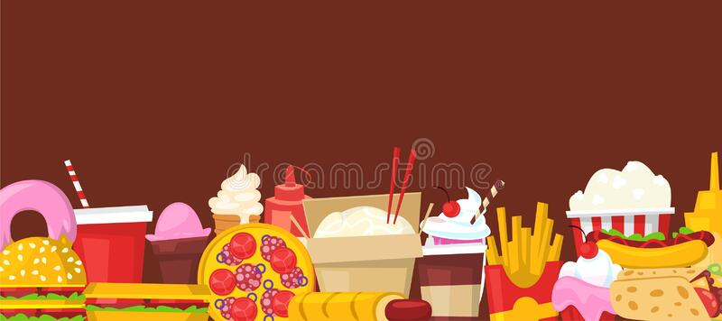

Soy un joven estudiante que actualmente cursa grado décimo, en estos momentos me encuentro apredndiendo acerca de programcaión, ya que me llama mucho la atención y me parece muy divertido, me considero una persona bastante curiosa y que siempre intenta disfrutar su tiempo al máximo.

En mis tiempos libres me gusta ver peliculas o ver series, mis favoritas son las de acción, ficción, tambien disfruto ver peliculas de superheroes y ese estilo.
Cuando me encuentro aburrido me divierto muchisimo juando videojuegos puede ser con mis amigos o incluso con personas desconocidas, me gusta ya que me distrae de los deberes diarios.
A pesar de que no soy muy bueno, en mis tiempos libre me gusta cocinar, en su mayoria son postres y comidas rapidas ya que estos son faciles de hacer
También disfruto mucho observar el cielo, me gusta cuando atardece y ver como lentamente se esconde el sol, esto es relajante y me ayuda a despejarme.
La gran parte de mi tiempo lo paso escuchando música, entre mis tres artistas favoritos están Drake, Jason Derulo e Inagine Dragons, su música me gusta desde hace aproximadamente cinco años y siento que su música me ayuda a concentrarme y a la vez me ponen feliz.
Lo primero que pienso a futuro es terminar el colegio y luego de eso esforzarme por la carrera que quiero estudiar, la cual es ingenieria mecatrónica, está carrera me ha llamado mucho la atención desde hace aproximadamente un año y medio, ya que me gusta la invención de tecnologias que puedan ayudar a las personas que lo necesitan.
Más adelante pienso continuar esforzandome cada día por lo que quiero, y si es posible espero estar viajando por todo el mundo aprendiendo cosas nuevas acerca de nuestro mundo y las personas que habitan en el.